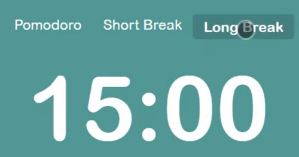
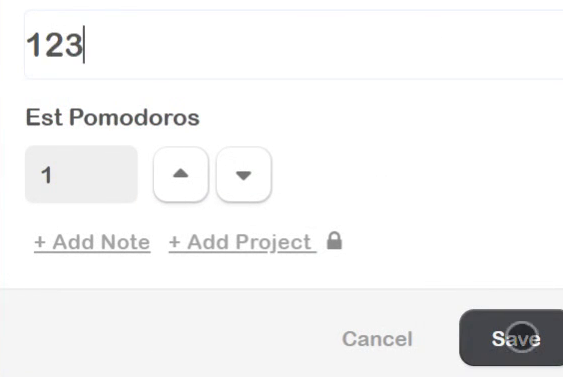
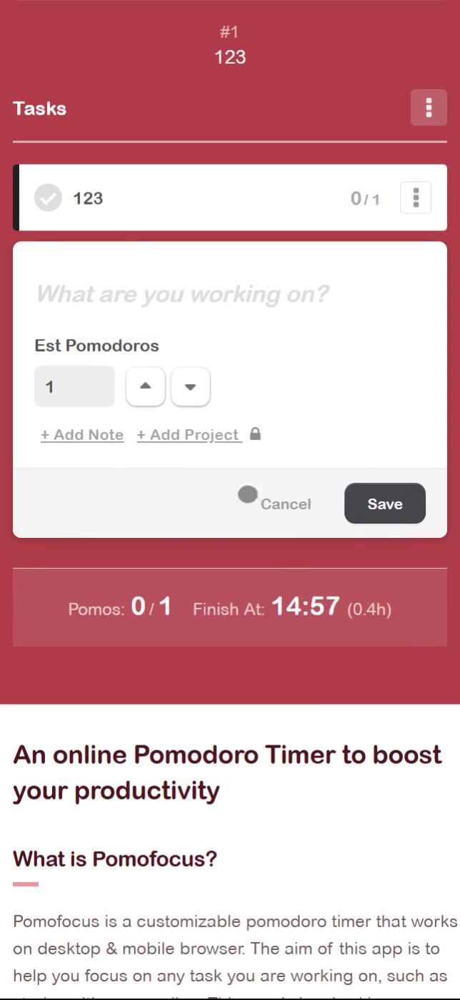
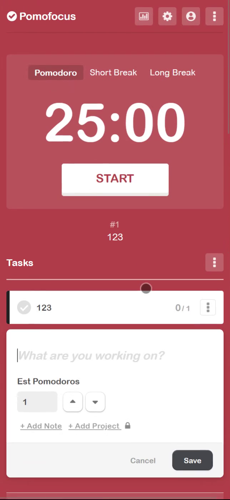
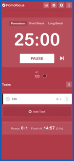
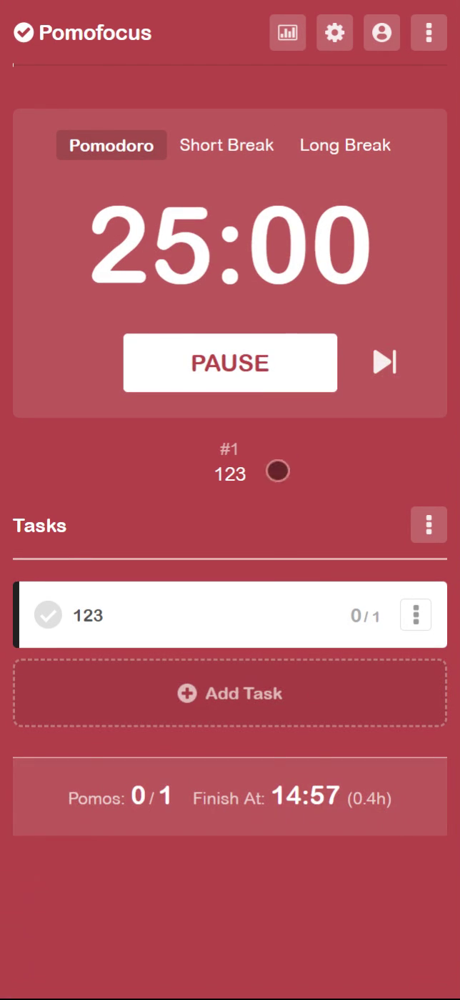

screenshot_0 · full
[644, 1398] → [644, 1398] · 保留像素 100.0% · 场景 0


坐标：[0, 0, 644, 1398] · 原因：first_screenshot
算法版本：experimental_theme_aware_per_step_v2。仅用于预览，生成流程未修改。
返回任务总览 · 查看全部步骤拼图 · 查看算法判断 JSON
左侧为原图预览和选区（绿色：裁剪；蓝色：保留整图），右侧为此算法的输出预览；实验版尚未用于生成。点击图片查看原尺寸；预览自动缩放。像素减少比例不等于 token 减少比例。
[644, 1398] → [644, 1398] · 保留像素 100.0% · 场景 0
坐标：[0, 0, 644, 1398] · 原因：first_screenshot
[644, 1398] → [499, 538] · 保留像素 29.8% · 场景 0
坐标：[72, 161, 571, 699] · 原因：theme_change_stable_layout_local_crop
主题配色变化（裁剪之外也可能发生）： #af3b49 → #845a5f（约 67.1%） #b64f5b → #906a70（约 22.7%） #bb5b67 → #97767a（约 1.3%）
[644, 1398] → [500, 263] · 保留像素 14.6% · 场景 0
算法输出预览

坐标：[73, 161, 573, 424] · 原因：theme_change_stable_layout_local_crop
主题配色变化（裁剪之外也可能发生）： #845a5f → #3e8889（约 59.8%） #906a70 → #529696（约 24.2%） #7b5359 → #377e7d（约 6.0%） #855b60 → #3f8889（约 2.0%）
[644, 1398] → [499, 532] · 保留像素 29.5% · 场景 0
坐标：[74, 167, 573, 699] · 原因：theme_change_stable_layout_local_crop
主题配色变化（裁剪之外也可能发生）： #3e8889 → #a7404e（约 59.9%） #529696 → #b15461（约 25.4%） #377e7d → #983b48（约 5.4%）
[644, 1398] → [644, 1398] · 保留像素 100.0% · 场景 1
坐标：[0, 0, 644, 1398] · 原因：large_visual_change
[644, 1398] → [178, 368] · 保留像素 7.3% · 场景 1
坐标：[52, 266, 230, 634] · 原因：localized_change
[644, 1398] → [563, 377] · 保留像素 23.6% · 场景 1
算法输出预览

坐标：[23, 255, 586, 632] · 原因：localized_change
[644, 1398] → [644, 1398] · 保留像素 100.0% · 场景 1
算法输出预览

坐标：[0, 0, 644, 1398] · 原因：changes_spread_keep_full
[644, 1398] → [644, 1398] · 保留像素 100.0% · 场景 2
算法输出预览

坐标：[0, 0, 644, 1398] · 原因：large_visual_change
[644, 1398] → [644, 1398] · 保留像素 100.0% · 场景 2
原图与选区

算法输出预览

坐标：[0, 0, 644, 1398] · 原因：changes_spread_keep_full
[644, 1398] → [644, 1398] · 保留像素 100.0% · 场景 2
坐标：[0, 0, 644, 1398] · 原因：changes_spread_keep_full
[644, 1398] → [644, 1398] · 保留像素 100.0% · 场景 2
坐标：[0, 0, 644, 1398] · 原因：changes_spread_keep_full